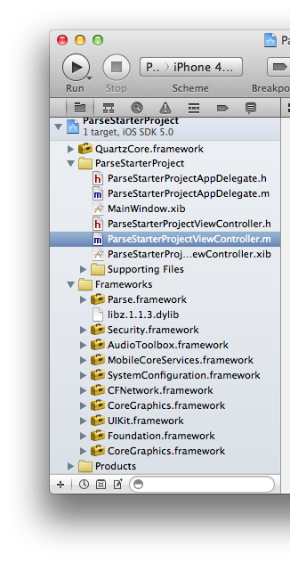

Parseを使ってみる
概要
BaaS(Backend as a Service) の、Parseを使って遊んでみる。
https://www.parse.com/
BaaSって
Parseの場合、WebServiceの「保存」Persistentを勝手に旨い事やってくれる化・自動化したもの。
iOS/Androidから通信するだけで、特定のKVSとしてデータを保持してくれる。
Parseの場合、データのPersistent以外にも、
・Web側データの管理、表示（課金にひもづくからそりゃあね
・PushNotification
にも対応している。
導入
クイックスタート
https://www.parse.com/apps/quickstart
から、
適当に、Parse対応したいアプリの形式を選ぶ
(上だとExisting iOS を選んでいるけど、この記事では New iOS を選択した。)
ParseStarterProject というiOS Project一式がDLされるので、Xcodeで開く。
見てみると、いろいろFWつかってある。あとQuartzCoreはみ出てる。

チュートリアルどおり、ParseStarterProjectAppDelegate.m > didFinishLaunch にメソッド追加

同梱の ParseStarterProjectViewController.h にimport追加

ParseStarterProjectViewController.m の viewDidLoadに下記を追加
通信用のオブジェクトを作成、オブジェクト(key-value)をセットしてsaveで、Parse側に保存される。

起動してみたところ

チュートリアルに戻り、Testってボタンがあるので押すと、さきほど送り込んだKey-Valueが表示される。

こういうチュートリアル良いですね。やってた事の意味が分かりやすい。
疑問
通信に失敗したらどうなっちゃうの？
たとえば
[testObject save]
このメソッドはbool値を返してきてて、同期的に通信を行い、正否を返してくる。
通信Offってやってみたらfalse帰ってきた。
数回リトライし、理由を出力
理由取得の方法は、必要があったら調べて書く。かんたんぽい。
あと、RemoteNotification出して教えてくれるっぽい。実機なら試せる。
使用感未確認だけど楽しそうだなーと思った部分
saveInBackground
saveInBackgroundWithTarget
saveInBackgroundWithBlock
saveEventually
fetch系
delete系
名前見てるだけで「ヘェ～」ってなるメソッドがいっぱいある。ステキ。
とりあえずiOSだけで成立するようなクライアント限定系のアプリ/サービスをさくっと作る分には良さげ。